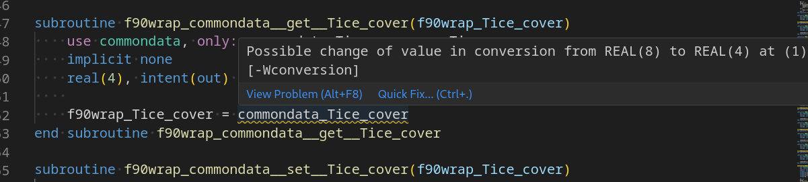

Background
air2stream is being ported to Python or perhaps Julia. The work described here may be obsolete by the time you read.
This is a follow up on Wrapping air2stream to access it from Python - part 1.
Due to some project timelines, I have to provide an air2stream python interface ASAP even if it is to be superseded by a “pure” python implementation in the future.
Development environment and code editor
It is really important to have a development environment that helps you and is pleasant to work with. There is a subjective part to assessing it, but for this post I would suggest you consider Visual Studio Code with the extensions Modern Fortran and Fortran Breakpoint Support, although we may not use the second yet in this post.
Method
I had initially thought for this post I would follow the guidelines in the post How to Work with Legacy Fortran Code: A Short Guideline. I would reengineer a bit of the Fortran code itself to make it more like a “grey box” where model inputs, parameters and outputs can be set or gotten “in memory” rather than using input/output files.
However I quickly found out that there was value in just trying to wrap the Fortran program as is upfront, and delay any redesign of the Fortran code.
The main features of “How to Work with Legacy Fortran Code: A Short Guideline” below remain valid considerations; we’ll just dive deeper in to them in another post.
- Make system-level tests
- Modularize the code and remove COMMON blocks
- Remove global variables and specify argument’s intent
- Gradually add more tests while improving code quality.
Wrapping air2stream with f90wrap
First, just make sure you can run the program as is as it will be a reference point for testing correctness after Python wrapping and eventual code redesign.
Running as-is
My fork of air2stream at v1.2.0 is the starting point. It includes a handy build system using cmake already contributed by someone else. Sample data is included in the codebase and cmake ../src/; make works absolutely fine on Linux: [100%] Built target air2stream.
From within the “build” folder, ./air2stream -f ../input.txt leads to an error: air2stream expects some files alongside the executable. So, cp air2stream ; cd ... ./air2stream -f ./input.txt then runs and performs a calibration. It takes a few dozen of seconds to complete the calibration.
I do note something the program outputs, hopefully not of practical concern but time will tell.
Note: The following floating-point exceptions are signalling: IEEE_INVALID_FLAG IEEE_OVERFLOW_FLAGThe input.txt includes comments on the meaning of inputs, which is neat.
There are different run modes: calibration, simulation. Not sure what controls which mode it runs in. SUBROUTINE read_calibration PSO ! optimization algorithm: which actually could be valued as ‘FORWARD’ although this is not documented.
Refactor the I/O into an API
While this post will focus on f90wrap rather than reengineering the program, let’s look at adding one new subroutine to help test in memory.
Most if not all subroutines appear to be without arguments and use the commondata module with global variables. At least, they seem to all be in one file.
set_input(a,b,c);
fortran_main();
get_output(x,y,z);One of the first subroutines called by the program is SUBROUTINE read_calibration which reads a file inputfile.
All of the information is read and stored in global variables : air_station, water_station, etc., but they are already in a common module (file) rather than peppered through the code, which is a good starting point.
! read input information
OPEN(unit=1,file=inputfile,status='old',action='read')
READ(1,*) ! header
READ(1,*) name ! name of folder
READ(1,*) air_station ! name/ID of the air station
READ(1,*) water_station ! name/ID of the water station
READ(1,*) series ! type of series: c=continuous, m=mean year
READ(1,*) time_res ! time resolution: 1d=daily, nw=n weeks (n=1,2,...), 1m=monthly
READ(1,*) version ! version: 3,4,5,7,8 parameters
READ(1,*) Tice_cover ! Threshold temperature for ice formation
READ(1,*) fun_obj ! objective function: KGE, NSE, RMS
READ(1,*) mod_num ! mod_num : RK4 , EUL , RK2 , CRN
READ(1,*) runmode ! optimization algorithm: PSO or LATHYP
READ(1,*) prc ! minimum percentage of data in input: 0...1
READ(1,*) n_run ! number of iterations
READ(1,*) mineff_index ! index for the minimum efficiency that the code memorizes
CLOSE(1)Let us write an additional SUBROUTINE set_calibration_param which takes parameters as arguments to the subroutine. We have to prefix the argument names to avoid clashes with global variables (so far as I know Fortran anyway).
SUBROUTINE set_calibration_param( &
name_p, & ! name of folder
air_station_p, & ! name/ID of the air station
water_station_p, & ! name/ID of the water station
series_p, & ! type of series: c=continuous, m=mean year
time_res_p, & ! time resolution: 1d=daily, nw=n weeks (n=1,2,...), 1m=monthly
version_p, & ! version: 3,4,5,7,8 parameters
Tice_cover_p, & ! Threshold temperature for ice formation
fun_obj_p, & ! objective function: KGE, NSE, RMS
mod_num_p, & ! mod_num : RK4 , EUL , RK2 , CRN
runmode_p, & ! optimization algorithm: PSO or LATHYP
prc_p, & ! minimum percentage of data in input: 0...1
n_run_p, & ! number of iterations
mineff_index_p & ! index for the minimum efficiency that the code memorizes
)
IMPLICIT NONE
USE commondata
CHARACTER(LEN=30), intent(in) :: name_p, air_station_p, water_station_p, runmode_p
CHARACTER(LEN=3), intent(in) :: time_res_p, fun_obj_p, mod_num_p
REAL(KIND=8), intent(in) :: Tice_cover_p, prc_p, mineff_index_p
INTEGER, intent(in) :: n_run_p, version_p
CHARACTER(LEN=1), intent(in) :: series_p
name=name_p
air_station=air_station_p
water_station=water_station_p
series=series_p
time_res=time_res_p
version=version_p
Tice_cover=Tice_cover_p
fun_obj=fun_obj_p
mod_num=mod_num_p
runmode=runmode_p
prc=prc_p
n_run=n_run_p
mineff_index=mineff_index_p
station=TRIM(air_station)//'_'//TRIM(water_station)
side effects
! subfolder creation is system-specific
! #ifdef _WIN32
! call system('mkdir ' // TRIM(name)//'\output_'//TRIM(version)//'\')
! #else
! call system('mkdir -p ' // folder)
! #endif IF (runmode .eq. 'FORWARD') THEN
OPEN(unit=1,file=TRIM(name)//'/parameters_forward.txt',status='old',action='read')
READ(1,*) (par(i), i=1,n_par)
ELSE IF (runmode .eq. 'PSO') THEN
! read PSO parameters
OPEN(unit=1,file='PSO.txt',status='old',action='read')
READ(1,*) ! header
READ(1,*) n_particles
READ(1,*) c1,c2
READ(1,*) wmax,wmin
CLOSE(1)
END IF IF (version == 3) THEN !air2stream with 3 parameters
parmin(4)=0; parmax(4)=0; flag_par(4)=.false.;
parmin(5)=0; parmax(5)=0; flag_par(5)=.false.;
parmin(6)=0; parmax(6)=0; flag_par(6)=.false.;
parmin(7)=0; parmax(7)=0; flag_par(7)=.false.;
parmin(8)=0; parmax(8)=0; flag_par(8)=.false.;
END IF! read T series (calibration)
CALL read_Tseries('c')Does it compile
cd build ; make
85 | IMPLICIT NONE
| 2
86 | USE commondata
| 1
Error: USE statement at (1) cannot follow IMPLICIT NONE statement at (2)$ make
[ 16%] Building Fortran object CMakeFiles/air2stream.dir/AIR2STREAM_READ.f90.o
[ 33%] Linking Fortran executable air2stream
[100%] Built target air2streamDon’t delay gratfication - wrapping in Python with f90wrap
Installing f90wrap
The github repo for f90wrap has a readme with options and instructions for installing. f90wrap is available on conda-forge and you can do e.g. mamba install f90wrap. If you use virtual environments pip install f90wrap.
Generating wrappers for air2stream
The github repo for f90wrap has generic instructions and many sample for background. However in this section I will directly reuse a particular “recipe” I devised a couple of years ago.
F90_FILES="AIR2STREAM_MAIN.f90 AIR2STREAM_MODULES.f90 AIR2STREAM_READ.f90 AIR2STREAM_RUNMODE.f90 AIR2STREAM_SUBROUTINES.f90"
OBJ_FILES="AIR2STREAM_MAIN.o AIR2STREAM_MODULES.o AIR2STREAM_READ.o AIR2STREAM_RUNMODE.o AIR2STREAM_SUBROUTINES.o"
MODULE_NAME=A2S
cd ${HOME}/src/air2stream/src
# if we are re-running f90wrap I found this was better to first clean up generated files for a clean slate.
rm f90wrap_*.f90 *.o
rm _${MODULE_NAME}*
rm ${MODULE_NAME}.py
rm -rf __pycache__
f90wrap -m ${MODULE_NAME} $F90_FILESf90wrap seems to do its job and will have output a fair few things to the standard output, such as:
Kind map (also saved to .f2py_f2cmap)
{}
Constructors:
('initialise_ptr', 'initialise', 'allocate')
[etc.]
INFO:f90wrap.pywrapgen:PythonWrapperGenerator visiting routine set_calibration_param
[etc.]It has created three additional files:
- f90wrap_AIR2STREAM_MODULES.f90
- f90wrap_toplevel.f90
- A2S.py
f90wrap_AIR2STREAM_MODULES.f90
Looking into f90wrap_AIR2STREAM_MODULES.f90, f90wrap was able to create getter/setter functions for global variables, which is neat.
subroutine f90wrap_commondata__get__Tice_cover(f90wrap_Tice_cover)
use commondata, only: commondata_Tice_cover => Tice_cover
implicit none
real(4), intent(out) :: f90wrap_Tice_cover
f90wrap_Tice_cover = commondata_Tice_cover
end subroutine f90wrap_commondata__get__Tice_cover
subroutine f90wrap_commondata__set__Tice_cover(f90wrap_Tice_cover)
use commondata, only: commondata_Tice_cover => Tice_cover
implicit none
real(4), intent(in) :: f90wrap_Tice_cover
commondata_Tice_cover = f90wrap_Tice_cover
end subroutine f90wrap_commondata__set__Tice_coverf90wrap_toplevel.f90
The wrappers fo the top-level subroutines include one for our new set_calibration_param subroutine. Note that it is a wrapper that appears not to do much except pass arguments through, although we notice that some of the arguments are of kind real(4) rather than real(8). In other circumstance with more complicated types I would expect some form of marshalling. In particular subroutines with arguments of array types, for instance, real, dimension(:) will have a more sophisticated wrapper, but this is a topic for another post.
subroutine f90wrap_set_calibration_param(name_p, air_station_p, water_station_p, series_p, time_res_p, version_p, &
tice_cover_p, fun_obj_p, mod_num_p, runmode_p, prc_p, n_run_p, mineff_index_p)
implicit none
external set_calibration_param
character(30), intent(in) :: name_p
character(30), intent(in) :: air_station_p
character(30), intent(in) :: water_station_p
character(1), intent(in) :: series_p
character(3), intent(in) :: time_res_p
integer, intent(in) :: version_p
real(4), intent(in) :: tice_cover_p
character(3), intent(in) :: fun_obj_p
character(3), intent(in) :: mod_num_p
character(30), intent(in) :: runmode_p
real(4), intent(in) :: prc_p
integer, intent(in) :: n_run_p
real(4), intent(in) :: mineff_index_p
call set_calibration_param(name_p, air_station_p, water_station_p, series_p, time_res_p, version_p, tice_cover_p, &
fun_obj_p, mod_num_p, runmode_p, prc_p, n_run_p, mineff_index_p)
end subroutine f90wrap_set_calibration_paramA2S.py
The python file contains the wrapper function set_calibration_param. The generated code does not include type hints, but a useful docstring nevertheless with types.
def set_calibration_param(name_p, air_station_p, water_station_p, series_p, \
time_res_p, version_p, tice_cover_p, fun_obj_p, mod_num_p, runmode_p, prc_p, \
n_run_p, mineff_index_p):
"""
set_calibration_param(name_p, air_station_p, water_station_p, series_p, \
time_res_p, version_p, tice_cover_p, fun_obj_p, mod_num_p, runmode_p, prc_p, \
n_run_p, mineff_index_p)
Defined at AIR2STREAM_READ.f90 lines 72-158
Parameters
----------
name_p : str
air_station_p : str
water_station_p : str
series_p : str
time_res_p : str
version_p : int
tice_cover_p : float
fun_obj_p : str
mod_num_p : str
runmode_p : str
prc_p : float
n_run_p : int
mineff_index_p : float
"""
_A2S.f90wrap_set_calibration_param(name_p=name_p, air_station_p=air_station_p, \
water_station_p=water_station_p, series_p=series_p, time_res_p=time_res_p, \
version_p=version_p, tice_cover_p=tice_cover_p, fun_obj_p=fun_obj_p, \
mod_num_p=mod_num_p, runmode_p=runmode_p, prc_p=prc_p, n_run_p=n_run_p, \
mineff_index_p=mineff_index_p)It is unclear what _A2S.f90wrap_set_calibration_param is, _A2S is the bit of native code (dynamic library) that deals with the Python-Fortran interop, and is currently missing. VScode reports:
Import "_A2S" could not be resolvedPylancereportMissingImportsCompiling _A2S
I know upfront that -fPIC compilation option is required, which is not necessarily obvious from the f90wrap documentation, otherwise an error of the type “relocation R_X86_64_PC32 against symbol `__forecastdata_MOD_er_inflow’ can not be used when making a shared object.”. We’ll deliberately overlook this option for a while.
Let’s compile the fortran source files to the object files.
gfortran -c $F90_FILESAnd… compilation fails. It also includes a f951: some warnings being treated as errors
The types of errors range from:
AIR2STREAM_READ.f90:222:55:
222 | call system('mkdir ' // TRIM(name)//'\output_'//TRIM(version)//'\')
| 1
Error: 'string' argument of 'trim' intrinsic at (1) must be CHARACTERThere are a bunch of lines that sound like the compiler by default expects a maximum number of columns: Error: Line truncated at (1) [-Werror=line-truncation]. Ah, punchcards hangovers. Subsequent cryptic syntax errors such as the following are probably false positives consequence of the line truncation.
AIR2STREAM_SUBROUTINES.f90:71:132:
71 | Twat_mod(j+1) = ( Twat_mod(j) + 0.5d0/DD_j*(par(1)+par(2)*Tair(j)-par(3)*Twat_mod(j)+ theta_j*(par(5)+par(6)*COS(2.d0*pi*((tt(j))-par(7)))-par(8)*Twat_mod(j))) + &
| 1
Error: Missing exponent in real number at (1)We could compile the program with cmake; what gfortran options were used? in the CMakeLists.txt we find:
if(CMAKE_Fortran_COMPILER_ID MATCHES GNU)
set(CMAKE_Fortran_FLAGS "${CMAKE_Fortran_FLAGS} -ffree-form -ffree-line-length-0 -cpp -Wall -static")
set(CMAKE_Fortran_FLAGS_DEBUG "-O0 -g3")
set(CMAKE_Fortran_FLAGS_RELEASE "-Ofast -ffast-math -march=native")
endif()OK, let’s hold on release flags, but try with “free form” flags:
gfortran -c $F90_FILES -ffree-form -ffree-line-length-0 -cpp -WallOK, it works. we now have the modules object files *.o. We should be able to link them to a shared library using f2py-f90wrap:
f2py-f90wrap -c -m _${MODULE_NAME} f90wrap_*.f90 $OBJ_FILES > wrapping.log 2>&1 But we hit a snag. First, there are some warnings about possible value conversion with loss of precision., which may be expected though. Still, duly noted:
f90wrap_AIR2STREAM_MODULES.f90:252:25:
252 | f90wrap_Tice_cover = commondata_Tice_cover
| 1
Warning: Possible change of value in conversion from REAL(8) to REAL(4) at (1) [-Wconversion]Side note: the visual studio code extensions are doing a good job of noticing this too.

Indeed the core model state is REAL(KIND=8) :: Tice_cover but exposed by the wrapper as a Real(4). kindmap option in f90wrap? not sure.
The above are warnings. The real showstopper is a relocation R_X86_64_PC32 against symbol '__commondata_MOD_parmin' can not be used when making a shared object; recompile with -fPIC. At least it is helpfully flagging what is missing.
INFO: /usr/bin/gfortran -Wall -g -Wall -g -shared /tmp/tmpgbms1uza/tmp/tmpgbms1uza/src.linux-x86_64-3.9/_A2Smodule.o /tmp/tmpgbms1uza/tmp/tmpgbms1uza/src.linux-x86_64-3.9/fortranobject.o /tmp/tmpgbms1uza/f90wrap_AIR2STREAM_MODULES.o /tmp/tmpgbms1uza/f90wrap_toplevel.o /tmp/tmpgbms1uza/tmp/tmpgbms1uza/src.linux-x86_64-3.9/_A2S-f2pywrappers.o AIR2STREAM_MAIN.o AIR2STREAM_MODULES.o AIR2STREAM_READ.o AIR2STREAM_RUNMODE.o AIR2STREAM_SUBROUTINES.o -L/usr/Cellar/gcc/12.2.0/bin/../lib/gcc/current/gcc/x86_64-pc-linux-gnu/12/../../.. -L/usr/Cellar/gcc/12.2.0/bin/../lib/gcc/current/gcc/x86_64-pc-linux-gnu/12/../../.. -lgfortran -o ./_A2S.cpython-39-x86_64-linux-gnu.so
/usr/bin/ld: AIR2STREAM_SUBROUTINES.o: warning: relocation against `__commondata_MOD_theta_j1' in read-only section `.text'
/usr/bin/ld: AIR2STREAM_MAIN.o: relocation R_X86_64_PC32 against symbol `__commondata_MOD_parmin' can not be used when making a shared object; recompile with -fPIC
/usr/bin/ld: final link failed: bad value
collect2: error: ld returned 1 exit status
error: Command "/usr/bin/gfortran -Wall -g -Wall -g -shared /tmp/tmpgbms1uza/tmp/tmpgbms1uza/src.linux-x86_64-3.9/_A2Smodule.o /tmp/tmpgbms1uza/tmp/tmpgbms1uza/src.linux-x86_64-3.9/fortranobject.o /tmp/tmpgbms1uza/f90wrap_AIR2STREAM_MODULES.o /tmp/tmpgbms1uza/f90wrap_toplevel.o /tmp/tmpgbms1uza/tmp/tmpgbms1uza/src.linux-x86_64-3.9/_A2S-f2pywrappers.o AIR2STREAM_MAIN.o AIR2STREAM_MODULES.o AIR2STREAM_READ.o AIR2STREAM_RUNMODE.o AIR2STREAM_SUBROUTINES.o -L/usr/Cellar/gcc/12.2.0/bin/../lib/gcc/current/gcc/x86_64-pc-linux-gnu/12/../../.. -L/usr/Cellar/gcc/12.2.0/bin/../lib/gcc/current/gcc/x86_64-pc-linux-gnu/12/../../.. -lgfortran -o ./_A2S.cpython-39-x86_64-linux-gnu.so" failed with exit status 1Recompile with -fPIC
The -fPIC optiosn indeed seems to resolve the issue
gfortran -c $F90_FILES -fPIC -ffree-form -ffree-line-length-0 -cpp -Wall
f2py-f90wrap -c -m _${MODULE_NAME} f90wrap_*.f90 $OBJ_FILES > wrapping.log 2>&1 We now can see a new file _A2S.cpython-39-x86_64-linux-gnu.so. What’s in it? ldd _A2S.cpython-39-x86_64-linux-gnu.so reports
linux-vdso.so.1 (0x00007fff56ab0000)
libgfortran.so.5 => /lib/x86_64-linux-gnu/libgfortran.so.5 (0x00007f01bf800000)
libm.so.6 => /lib/x86_64-linux-gnu/libm.so.6 (0x00007f01bfb6b000)
libc.so.6 => /lib/x86_64-linux-gnu/libc.so.6 (0x00007f01bf61f000)
libquadmath.so.0 => /lib/x86_64-linux-gnu/libquadmath.so.0 (0x00007f01bfb24000)
libgcc_s.so.1 => /lib/x86_64-linux-gnu/libgcc_s.so.1 (0x00007f01bfb04000)
/lib64/ld-linux-x86-64.so.2 (0x00007f01bfcae000)and nm _A2S.cpython-39-x86_64-linux-gnu.so | less reports functions entry points such as:
0000000000035a80 d doc_f2py_rout__A2S_f90wrap_set_calibration_paramOK, so this is black magic. Interop can be a scary field, but tools like f90wrap are here to shield you from this, so just enjoy the ride!
Does it work?
From your conda environment where you had installed f90wrap, let’s try to load this new python module:
(mycondaenv)$ pythonAnd it all looks like it is working just fine! Is this just not beautiful?
Python 3.9.15 | packaged by conda-forge | (main, Nov 22 2022, 15:55:03)
[GCC 10.4.0] on linux
Type "help", "copyright", "credits" or "license" for more information.
>>> import A2S
>>> dir(A2S)
['Commondata', '_A2S', '__builtins__', '__cached__', '__doc__', '__file__', '__loader__', '__name__', '__package__', '__spec__', 'absolute_import', 'aggregation', 'best', 'call_model', 'commondata', 'division', 'f90wrap', 'forward', 'forward_mode', 'funcobj', 'leap_year', 'lh_mode', 'logging', 'numpy', 'parse_command_args', 'print_byebye', 'print_function', 'print_help', 'pso_mode', 'read_calibration', 'read_tseries', 'read_validation', 'rk4_air2stream', 'set_calibration_param', 'shuffle', 'statis', 'sub_1']
>>> You can start to poke the model state. Even uninitialised values have handled gracefully:
>>> A2S.commondata.tair
Traceback (most recent call last):
File "<stdin>", line 1, in <module>
File "/home/xxxyyy/src/air2stream/src/A2S.py", line 413, in tair
tair = f90wrap.runtime.get_array(f90wrap.runtime.sizeof_fortran_t,
ValueError: array is NULL
>>> A2S.commondata.n_tot
0
>>> A2S.commondata.time_res
b''
>>> A word of caution though, beware which python environment from which you load the wrapper module though. For instance if I load from my base conda environment:
(mycondaenv)$ conda deactivate
(base)$ pythonThen the wrapper module A2S fails to load.
Python 3.10.8 | packaged by conda-forge | (main, Nov 22 2022, 08:26:04) [GCC 10.4.0] on linux
Type "help", "copyright", "credits" or "license" for more information.
>>> import A2S
Traceback (most recent call last):
File "<stdin>", line 1, in <module>
File "/home/xxxyyy/src/air2stream/src/A2S.py", line 2, in <module>
import _A2S
ModuleNotFoundError: No module named '_A2S'I am not sure why, whether f90wrap is required in the environment (whichi is likely, and would be understandable). Also the python versions differ Python 3.9.15 versus Python 3.10.8, and _A2S.cpython-39-x86_64-linux-gnu.so may work with the former only and be incompatible with the latter.
Conclusion
We’ve successfully wrapped a Fortran 90 program as is with f90wrap, and it looks like it is doing a great job to generate meaningful wrapper functions even without reengineering the Fortran code.
To be continued.